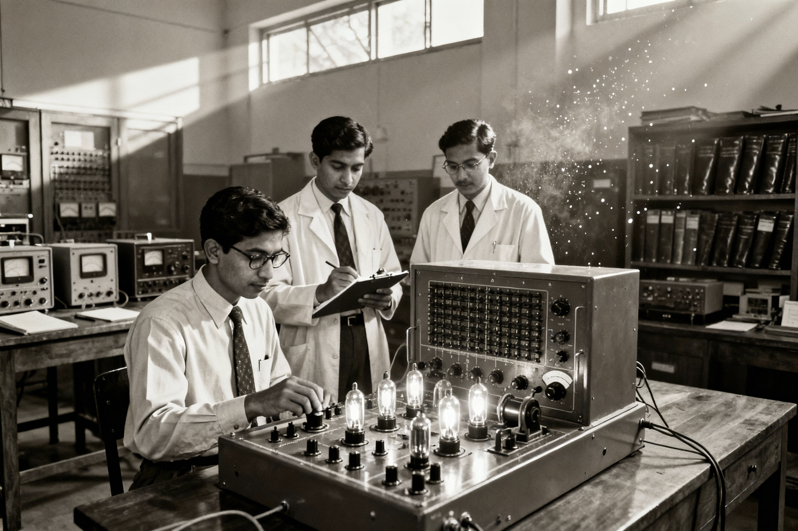

Legacy • R&D • Grit
Past Hub: Foundations of Indian Tech
Explore the institutions, policies, and pioneers that seeded India’s computing, electronics, and space capabilities. Tap on milestones, compare labs, and mix influences to see how the groundwork was laid.
Heritage Explorer
Select a milestone to reveal its story.
Choose a milestone to begin.
Lab Lineage Comparator
Toggle labs to see their stacked contributions.
Activate a lab to view its ripple effects.
Archive Stats
Glance at formative indicators.
Past Hub Picture Slots
Collect imagery that reinforces each heritage storyline.
